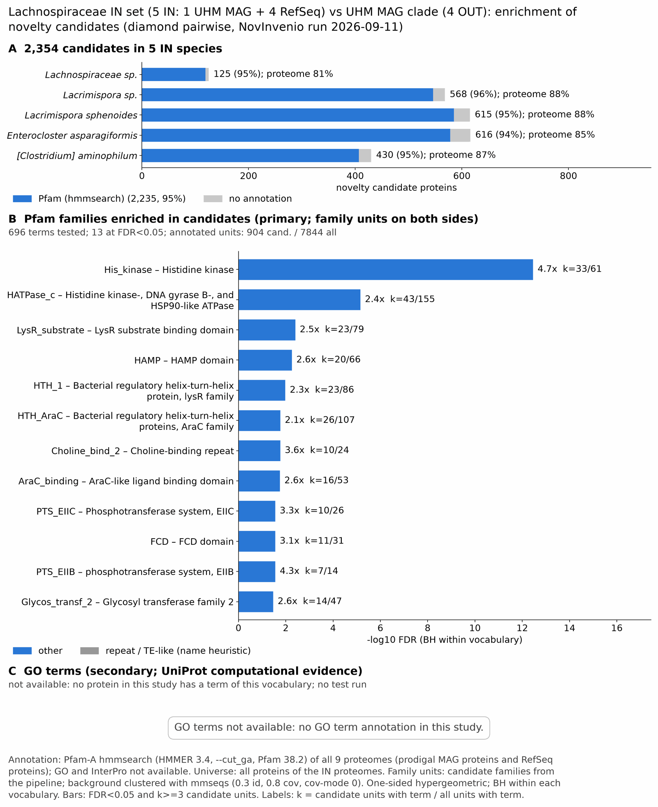

UHM lachnoNovelclade: functional enrichment (novelty)
One-sided hypergeometric test per term; Benjamini-Hochberg FDR within each scope, level and vocabulary. Candidates are the novelty candidates: gene families present in the IN group and absent from the OUT group. Universe: proteome. Background clustered: True (17412 sequences in 9078 clusters, mmseqs easy-cluster --min-seq-id 0.3 -c 0.8). Family level: one unit per candidate family and per background cluster.
Sources: Pfam: 2026-01-27-Pfam38.2; InterPro entries: 110.0; GO: releases/2026-07-26; analysis generated 2026-10-14T21:58:06. Source tables: studies/bacteria/UHM_lachnoNovelclade/analysis/enrichment/outputs/proteome_clustered.
Full record: PROVENANCE. Run report: report.html.
- Annotation: Pfam-A HMM search (hmmsearch, Pfam gathering thresholds) for every species; no UniProt annotation. Each annotation file has a provenance sidecar (domain table, HMMER version, Pfam release); PROVENANCE.yaml lists the files and their checksums.
- GO: not available for this study (no GO annotation in any species).
- Candidate families (pipeline clustering of candidates) and background clusters (mmseqs clustering of the background proteome) are made by different runs, so family-level counts are not fully comparable.
- Low annotation: the candidate set has less than 50% annotation for InterPro 0.0%, GO 0.0%. Enrichment for these vocabularies has low power.
- GO and InterPro: not available for this study. No species has GO and InterPro annotation (Ub71, Lsp1, Lsph, Easp, Cami), so no GO and InterPro test was run.
Summary figure

Annotation coverage
Fraction of proteins with at least one term per vocabulary. Universe = all proteins of the species; candidates = the candidate set.
| Species | Set | Proteins | Pfam | Pfam clan | InterPro | GO | Any |
|---|---|---|---|---|---|---|---|
| Ub71 | universe | 2681 | 81.4% | 66.0% | 0.0% | 0.0% | 81.4% |
| Ub71 | candidates | 125 | 95.2% | 84.8% | 0.0% | 0.0% | 95.2% |
| Lsp1 | universe | 4274 | 87.8% | 75.0% | 0.0% | 0.0% | 87.8% |
| Lsp1 | candidates | 568 | 96.1% | 80.3% | 0.0% | 0.0% | 96.1% |
| Lsph | universe | 4675 | 87.8% | 75.0% | 0.0% | 0.0% | 87.8% |
| Lsph | candidates | 615 | 95.1% | 80.5% | 0.0% | 0.0% | 95.1% |
| Easp | universe | 5589 | 85.3% | 72.5% | 0.0% | 0.0% | 85.3% |
| Easp | candidates | 616 | 93.8% | 80.4% | 0.0% | 0.0% | 93.8% |
| Cami | universe | 2547 | 87.4% | 72.6% | 0.0% | 0.0% | 87.4% |
| Cami | candidates | 430 | 94.7% | 77.7% | 0.0% | 0.0% | 94.7% |
| ALL_IN | universe | 19766 | 86.2% | 72.8% | 0.0% | 0.0% | 86.2% |
| ALL_IN | candidates | 2354 | 94.9% | 80.1% | 0.0% | 0.0% | 94.9% |
Tests summary
Per vocabulary: terms with FDR < 0.05 / terms tested. Protein level counts proteins; family level counts candidate families and background clusters.
| Scope | Level | Cand. units | Pfam sig / tested | Pfam clan sig / tested | InterPro sig / tested | GO sig / tested |
|---|---|---|---|---|---|---|
| whole_set | family | 941 | 13 / 696 | 5 / 241 | 0 / 0 (not_available_no_annotated_units) | 0 / 0 (not_available_no_annotated_units) |
| whole_set | protein | 2354 | 159 / 1787 | 33 / 356 | 0 / 0 (not_available_no_annotated_units) | 0 / 0 (not_available_no_annotated_units) |
| Cami | family | 419 | 0 / 156 | 0 / 106 | 0 / 0 (not_available_no_annotated_units) | 0 / 0 (not_available_no_annotated_units) |
| Cami | protein | 430 | 0 / 187 | 0 / 112 | 0 / 0 (not_available_no_annotated_units) | 0 / 0 (not_available_no_annotated_units) |
| Easp | family | 548 | 1 / 288 | 0 / 157 | 0 / 0 (not_available_no_annotated_units) | 0 / 0 (not_available_no_annotated_units) |
| Easp | protein | 616 | 6 / 408 | 2 / 175 | 0 / 0 (not_available_no_annotated_units) | 0 / 0 (not_available_no_annotated_units) |
| Lsp1 | family | 518 | 0 / 271 | 1 / 140 | 0 / 0 (not_available_no_annotated_units) | 0 / 0 (not_available_no_annotated_units) |
| Lsp1 | protein | 568 | 5 / 329 | 4 / 149 | 0 / 0 (not_available_no_annotated_units) | 0 / 0 (not_available_no_annotated_units) |
| Lsph | family | 550 | 2 / 270 | 0 / 142 | 0 / 0 (not_available_no_annotated_units) | 0 / 0 (not_available_no_annotated_units) |
| Lsph | protein | 615 | 5 / 353 | 3 / 149 | 0 / 0 (not_available_no_annotated_units) | 0 / 0 (not_available_no_annotated_units) |
| Ub71 | family | 123 | 0 / 135 | 0 / 94 | 0 / 0 (not_available_no_annotated_units) | 0 / 0 (not_available_no_annotated_units) |
| Ub71 | protein | 125 | 0 / 162 | 0 / 103 | 0 / 0 (not_available_no_annotated_units) | 0 / 0 (not_available_no_annotated_units) |
Top 25 Pfam terms (whole set, family level)
25 rows shown, ordered by FDR then p-value; 13 have FDR < 0.05 (bold).
| Term | Name | k / N cand. | n / M bg | Fold | FDR (BH) |
|---|---|---|---|---|---|
| PF06580 | His_kinase: Histidine kinase | 33 / 904 | 61 / 7844 | 4.694 | 3.46e-13 |
| PF02518 | HATPase_c: Histidine kinase-, DNA gyrase B-, and HSP90-like ATPase | 43 / 904 | 155 / 7844 | 2.407 | 6.88e-06 |
| PF03466 | LysR_substrate: LysR substrate binding domain | 23 / 904 | 79 / 7844 | 2.526 | 0.004 |
| PF00672 | HAMP: HAMP domain | 20 / 904 | 66 / 7844 | 2.629 | 0.005 |
| PF00126 | HTH_1: Bacterial regulatory helix-turn-helix protein, lysR family | 23 / 904 | 86 / 7844 | 2.321 | 0.010 |
| PF00165 | HTH_AraC: Bacterial regulatory helix-turn-helix proteins, AraC family | 26 / 904 | 107 / 7844 | 2.108 | 0.017 |
| PF19085 | Choline_bind_2: Choline-binding repeat | 10 / 904 | 24 / 7844 | 3.615 | 0.017 |
| PF02311 | AraC_binding: AraC-like ligand binding domain | 16 / 904 | 53 / 7844 | 2.619 | 0.018 |
| PF02378 | PTS_EIIC: Phosphotransferase system, EIIC | 10 / 904 | 26 / 7844 | 3.337 | 0.028 |
| PF07729 | FCD: FCD domain | 11 / 904 | 31 / 7844 | 3.079 | 0.028 |
| PF00367 | PTS_EIIB: phosphotransferase system, EIIB | 7 / 904 | 14 / 7844 | 4.338 | 0.028 |
| PF00535 | Glycos_transf_2: Glycosyl transferase family 2 | 14 / 904 | 47 / 7844 | 2.585 | 0.034 |
| PF25137 | ADH_Fe_C: Fe-containing alcohol dehydrogenase family, C-terminal | 5 / 904 | 8 / 7844 | 5.423 | 0.045 |
| PF13641 | Glyco_tranf_2_3: Glycosyltransferase like family 2 | 11 / 904 | 34 / 7844 | 2.807 | 0.052 |
| PF01228 | Gly_radical: Glycine radical | 5 / 904 | 9 / 7844 | 4.821 | 0.079 |
| PF12833 | HTH_18: Helix-turn-helix domain | 28 / 904 | 138 / 7844 | 1.761 | 0.081 |
| PF12733 | Cadherin-like: Cadherin-like beta sandwich domain | 4 / 904 | 6 / 7844 | 5.785 | 0.089 |
| PF00392 | GntR: Bacterial regulatory proteins, gntR family | 16 / 904 | 65 / 7844 | 2.136 | 0.090 |
| PF01479 | S4: S4 domain | 6 / 904 | 14 / 7844 | 3.719 | 0.107 |
| PF00465 | Fe-ADH: Iron-containing alcohol dehydrogenase | 5 / 904 | 10 / 7844 | 4.338 | 0.107 |
| PF01522 | Polysacc_deac_1: Polysaccharide deacetylase | 7 / 904 | 19 / 7844 | 3.197 | 0.120 |
| PF13242 | Hydrolase_like: HAD-hyrolase-like | 7 / 904 | 19 / 7844 | 3.197 | 0.120 |
| PF12821 | ThrE_2: Threonine/Serine exporter, ThrE | 4 / 904 | 7 / 7844 | 4.958 | 0.139 |
| PF00358 | PTS_EIIA_1: phosphoenolpyruvate-dependent sugar phosphotransferase system, EIIA 1 | 5 / 904 | 11 / 7844 | 3.944 | 0.148 |
| PF08239 | SH3_3: Bacterial SH3 domain | 6 / 904 | 16 / 7844 | 3.254 | 0.185 |
Top 25 InterPro terms (whole set, family level)
Not available: no protein of the candidate source group has a InterPro annotation in this study (for example Pfam-only HMM annotation). No InterPro test was run.
Top 15 GO terms (whole set, family level) — secondary, computational evidence (IEA/IBA) included
Not available: no protein of the candidate source group has a GO annotation in this study (for example Pfam-only HMM annotation). No GO test was run.
Actin cytoskeleton controls
Known actin-related families and how many of their proteins pass each filter. Protein ID columns are left out.
| control | pfam_ids | desc_regex | IN_universe | IN_in_matrix | IN_pass_ingroup_rule | candidates | near_miss_out1 | near_miss_out2 | n_Ub71 | n_Lsp1 | n_Lsph | n_Easp | n_Cami | n_Ub56 | n_Ub85 | n_Ub22 | n_Ub119 |
|---|---|---|---|---|---|---|---|---|---|---|---|---|---|---|---|---|---|
| Arp2/3 ARPC2 (P34-Arc) | PF04045 | 0 | 0 | 0 | 0 | 0 | 0 | 0 | 0 | 0 | 0 | 0 | 0 | 0 | 0 | 0 | |
| Arp2/3 ARPC3 (P21-Arc) | PF04062 | 0 | 0 | 0 | 0 | 0 | 0 | 0 | 0 | 0 | 0 | 0 | 0 | 0 | 0 | 0 | |
| Arp2/3 ARPC4 | PF05856 | 0 | 0 | 0 | 0 | 0 | 0 | 0 | 0 | 0 | 0 | 0 | 0 | 0 | 0 | 0 | |
| Arp2/3 ARPC5 (P16-Arc) | PF04699 | 0 | 0 | 0 | 0 | 0 | 0 | 0 | 0 | 0 | 0 | 0 | 0 | 0 | 0 | 0 | |
| Arp2/3 ARPC1 (description only) | arp2/3 complex.*(41|p41|subunit 1)|ARPC1 | 0 | 0 | 0 | 0 | 0 | 0 | 0 | 0 | 0 | 0 | 0 | 0 | 0 | 0 | 0 | |
| Arp2 / Arp3 (description only) | actin-related protein (2|3)\b|\bARP[23]\b | 0 | 0 | 0 | 0 | 0 | 0 | 0 | 0 | 0 | 0 | 0 | 0 | 0 | 0 | 0 | |
| WAVE complex NCKAP1 | PF09735 | 0 | 0 | 0 | 0 | 0 | 0 | 0 | 0 | 0 | 0 | 0 | 0 | 0 | 0 | 0 | |
| WAVE complex CYFIP (FragX_IP) | PF05994 | 0 | 0 | 0 | 0 | 0 | 0 | 0 | 0 | 0 | 0 | 0 | 0 | 0 | 0 | 0 | |
| WAVE complex ABI | PF07815|PF27594 | 0 | 0 | 0 | 0 | 0 | 0 | 0 | 0 | 0 | 0 | 0 | 0 | 0 | 0 | 0 | |
| SCAR/WAVE (SCAR_helical) | PF27569 | 0 | 0 | 0 | 0 | 0 | 0 | 0 | 0 | 0 | 0 | 0 | 0 | 0 | 0 | 0 | |
| WASP family (WH1) | PF00568 | 0 | 0 | 0 | 0 | 0 | 0 | 0 | 0 | 0 | 0 | 0 | 0 | 0 | 0 | 0 | |
| WH2 motif (WASP, WAVE, others) | PF02205 | 0 | 0 | 0 | 0 | 0 | 0 | 0 | 0 | 0 | 0 | 0 | 0 | 0 | 0 | 0 | |
| Formin FH2 | PF02181 | 0 | 0 | 0 | 0 | 0 | 0 | 0 | 0 | 0 | 0 | 0 | 0 | 0 | 0 | 0 | |
| Formin Drf_GBD / Drf_FH3 / Drf_DAD | PF06371|PF06367|PF06345 | 0 | 0 | 0 | 0 | 0 | 0 | 0 | 0 | 0 | 0 | 0 | 0 | 0 | 0 | 0 | |
| Ena/VASP (VASP_tetra) | PF08776 | 0 | 0 | 0 | 0 | 0 | 0 | 0 | 0 | 0 | 0 | 0 | 0 | 0 | 0 | 0 | |
| Coronin (description only) | coronin | 0 | 0 | 0 | 0 | 0 | 0 | 0 | 0 | 0 | 0 | 0 | 0 | 0 | 0 | 0 | |
| Cortactin (HS1_rep) | PF02218 | 0 | 0 | 0 | 0 | 0 | 0 | 0 | 0 | 0 | 0 | 0 | 0 | 0 | 0 | 0 | |
| Myosin 2 tail (Myosin_tail_1) | PF01576 | 0 | 0 | 0 | 0 | 0 | 0 | 0 | 0 | 0 | 0 | 0 | 0 | 0 | 0 | 0 | |
| Myosin head (all myosins) | PF00063 | 0 | 0 | 0 | 0 | 0 | 0 | 0 | 0 | 0 | 0 | 0 | 0 | 0 | 0 | 0 |
Page written by bin/generate_enrichment_page.py.